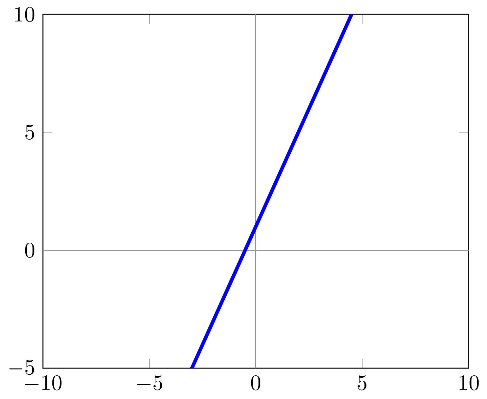
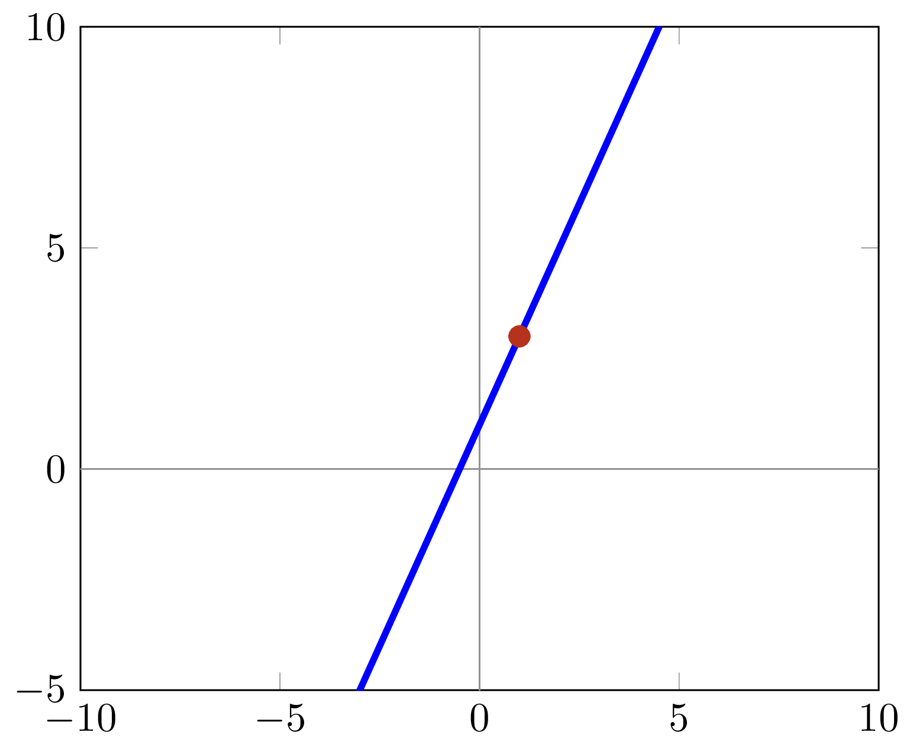
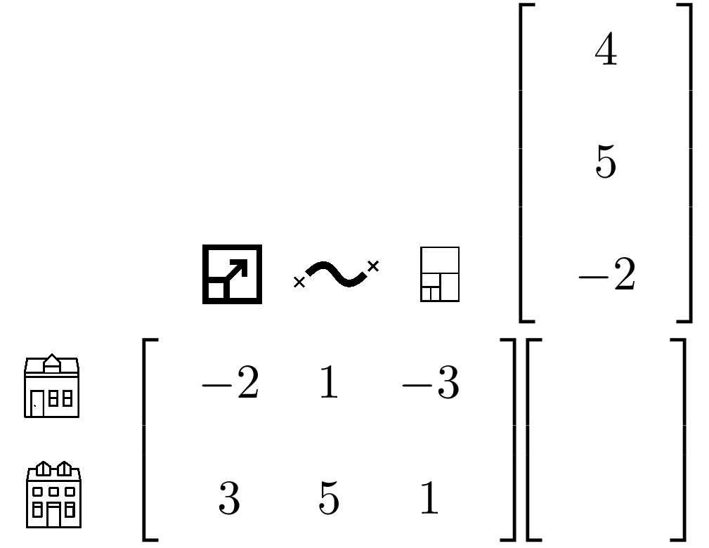
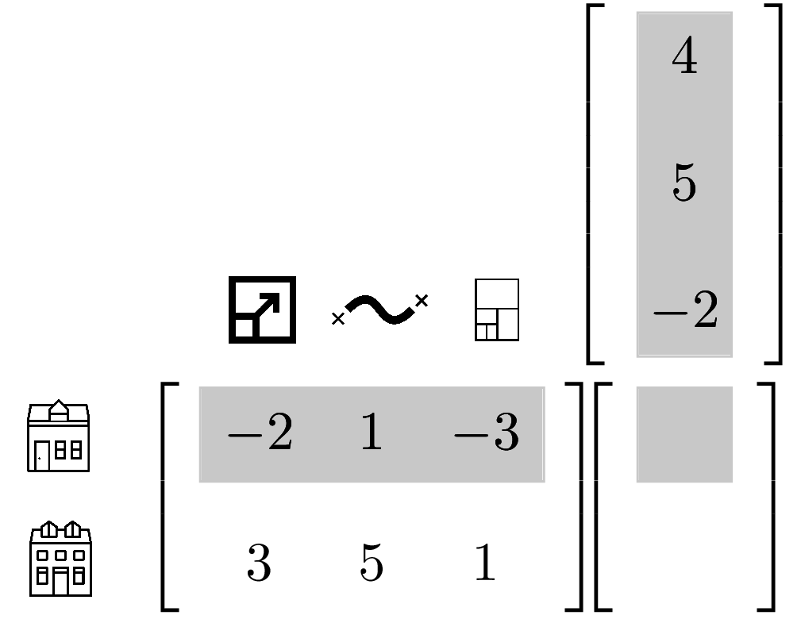

A gentle introduction to deep learning with TensorFlow
Michelle Fullwood
@michelleful
PyCon 2017

|
|
| Traditional machine learning | Deep learning |
Linear Regression
Linear Regression


Variables
$$\left[ \begin{array}{ccc} 1250 & 350 & 3 \end{array} \right] \rightarrow 345000$$
Variables
import numpy as np
x = np.array([1250, 350, 3])
y = 345000
Model
Multiply each feature by a weight.
Add an intercept to get our final estimate.
Model
Model - Parameters
weights = np.array([300, -10, -1])
intercept = 26497
Model - Operations
Model - Operations
def model(x, weights, intercept):
return x.dot(weights) + intercept
>>> y_hat = model(x, weights, intercept)
>>> y_hat
345000
Model - Operations
Model - Operations

Model - Variables
X = np.array([
[??, ??, ??],
[??, ??, ??],
[??, ??, ??]
])
Y = np.array([??, ??, ??])
Interlude: scaling
import sklearn
# center around zero and divide by stddev
scalerX = sklearn.preprocessing.StandardScaler()
scalerY = sklearn.preprocessing.StandardScaler()
X = scalerX.fit_transform(X)
Y = scalerY.fit_transform(Y)
Model - Variables
>>> X # fake numbers!
np.array([
[??, ??, ??],
[??, ??, ??],
[??, ??, ??]
])
>>> Y
np.array([??, ??, ??])
Model - Parameters
weights = np.array([??, ??, ??])
intercept = ??
Model - Operations
Model - Operations
Model - Operations
Model - Operations

Model - Operations
def model(X, weights, intercept):
return X.dot(weights) + intercept
>>> Y_hat = model(X, weights, intercept)
>>> Y_hat
[345000, ??, ??]
Model - Cost function
Model - Cost function

Model - Cost function

Cost function
def cost_function(Y_hat, Y):
return np.sum((Y_hat - Y)**2)
Optimization
Adjust parameters to minimize cost.
Optimization
Graph: Parabola with two tangentsOptimization - Gradient Calculation
$$\hat{y} = w_0x_0 + w_1x_1 + w_2x_2 + b$$ $$\epsilon = (y-\hat{y})^2$$
Goal: \(\frac{d\epsilon}{dw_i}, \frac{d\epsilon}{db}\)
Optimization - Gradient Calculation
$$\hat{y} = w_0x_0 + w_1x_1 + w_2x_2 + b$$
\(\frac{\partial\hat{y}}{\partial w_0} =\)\( x_0\)
Optimization - Gradient Calculation
$$\epsilon = (y-\hat{y})^2$$
\(\frac{d\epsilon}{d\hat{y}} =\) \(-\)\(2(y-\hat{y})\)
Optimization - Gradient Calculation
\(\frac{\partial\hat{y}}{\partial w_0} = x_0\)
\(\frac{d\epsilon}{d\hat{y}} = -2(y-\hat{y})\)
Chain rule: \(\frac{\partial\epsilon}{\partial x_0} = \frac{d\epsilon}{d\hat{y}}\frac{\partial\hat{y}}{\partial w_0} \)
Optimization - Gradient Calculation
\(\frac{\partial\hat{y}}{\partial w_0} = x_0\)
\(\frac{d\epsilon}{d\hat{y}} = -2(y-\hat{y})\)
\(\frac{\partial\epsilon}{\partial x_0} = -2(y-\hat{y})x_0 \)
Optimization - Gradient Calculation
$$\hat{y} = w_0x_0 + w_1x_1 + w_2x_2 + b\cdot1$$
\(\frac{\partial\epsilon}{\partial b} = -2(y-\hat{y})\cdot 1 \)
Optimization - Gradient Calculation
delta_y = y - y_hat
delta_weights = -2 * delta_y * weights
delta_intercept = -2 * delta_y * 1
Optimization - Learning Rate
TODOOptimization - Parameter Update
learning_rate = 0.05
weights = weights - \
learning_rate * delta_weights
intercept = intercept - \
learning_rate * delta_intercept
Training
def training_round(X, Y, weights, intercept,
alpha=learning_rate):
# calculate our estimate, y_hat
Y_hat = model(X, weights, intercept)
# calculate error
delta_Y = Y - Y_hat # TODO: check for batch
# calculate gradients
delta_weights = -2 * delta_y * weights
delta_intercept = -2 * delta_y
# update parameters
weights = weights - alpha * delta_weights
intercept = intercept - alpha * delta_intercept
return weights, intercept
Training
def train(X, Y):
# initialize weights to something small and non-zero
# using a recipe from http://cs231n.github.io/neural-networks-2/
weights = np.random.randn(len(Y)) * sqrt(2.0/len(Y))
for i in range(100):
weights, intercept = training_round(X, Y,
weights, intercept)
Testing
# don't forget to scale!
X_test = scalerX.transform(X_test)
Y_test = scalerY.transform(Y_test)
def test(X_test, Y_test, final_weights, final_intercept):
Y_hat_test = model(X_test, final_weights,
final_intercept)
return cost_function(Y_hat_test, Y_test) / len(Y_test)
>>> accuracy = test(X_test, Y_test,
final_weights, final_intercept)
>>> accuracy
???
Surprise!
You've made
a neural network!
Linear regression =
Simplest neural network

Linear regression =
Simplest neural network

Once more, with TensorFlow
Variables/Placeholders
import tensorflow as tf
X = tf.placeholder(tf.float32, [None, 3])
Y = tf.placeholder(tf.float32, [None, 1])
Model - parameters
weights = tf.Variable(tf.zeros([3, 1]))
intercept = tf.Variable(tf.zeros([1, 1]))
Model - operations
Y_hat = tf.matmul(X, weights) + intercept
Cost function
cost = tf.reduce_mean(tf.square(Y_hat - Y))
Optimization
learning_rate = 0.05
optimizer = tf.train.GradientDescentOptimizer
(learning_rate).minimize(cost)
Training
with tf.Session() as sess:
# initialize variables
sess.run(tf.global_variables_initializer())
for epoch in range(100):
X_batch, Y_batch = random_minibatch(X, Y)
sess.run(optimizer,
feed_dict={
X: X_batch,
Y: Y_batch
})
# Placeholders
X = tf.placeholder(tf.float32, [None, 3])
Y = tf.placeholder(tf.float32, [None, 1])
# Parameters
weights = tf.Variable(tf.zeros([3, 1]))
intercept = tf.Variable(tf.zeros([1, 1]))
# Operations
Y_hat = tf.matmul(X, weights) + intercept
# Cost function
cost = tf.reduce_mean(tf.square(Y_hat - Y))
# Optimization
optimizer = tf.train.GradientDescentOptimizer
(learning_rate).minimize(cost)

# train
with tf.Session() as sess:
# initialize variables
sess.run(tf.global_variables_initializer())
# run training rounds
for epoch in range(100):
X_batch, Y_batch = random_minibatch(X, Y)
sess.run(optimizer,
feed_dict={X: X_batch, Y: Y_batch})

Computation graph
Illustrate the computation graph - two parts to it, first computing y' and then computing the errorTrain loop - Forward propagation
Show the numbersTrain loop - Backward propagation
Show the numbersTrain loop - Update
Testing
Logistic regression
Logistic regression
illustrate the new problemLogistic regression
illustrate the solution of adding a function onto the end why not just treat it like linear regression?What needs changing?
Variables/Placeholders
No changeModel - parameters
No change, but different interpretationModel - operations
ChangedCost function
ChangedOptimization
SameTraining
SameTesting
SameNeural network interpretation
Activation functions
* Identity function: linear regression * Step function 0/1: perceptron * Logistic function: logistic regressionMulti-class logistic regression
Let's go deeper!
Adding another layer
diagramAdding another layer
CodeResults
Table -- no improvementIs Deep Learning a myth?
Modified intermediate layer
Introduce non-linearity in the intermediate layerNon-linear activation functions

|

|

|
Results
table -- show improvementWhat the hidden layer bought us
what can we now model with the hidden layer? * some non-linearities, XOR. Concentric Circles??Back-propagation
Briefly say that the chain rule in this context is called backprop, we don't really need to worry about it due to the beauty of autodiffLet's go deeper - add a layer
Going deeper
We're not doing deep learning yet. Graph of new layerGoing deeper
Code for adding a new layer. Just define new parameters and change the model.Results
table -- show improvement, maybe in training error only? Or both training and testing but only have a couple extra layersWhat does going deep buy us?
Learning higher-level featuresWhat does going deep buy us?
Show features learned in convnet for images: dots, edges, etc ---> objectsWhat does going deep buy us?
Incidentally, this is how neural style transfer works (maybe include this?)What does going deep buy us?
What about if we're doing text and passing in words? Get word embeddingsWhat does going deep buy us?
Talk about word2vec (show diagram), but say that it's not actually learned via deep learning. Can transform one-hot vectors to word2vec vectors, which more or less skips a layerWhat does going deep buy us?
In general, very difficult to interpret. Active research.Regularization
The dangers of overfitting
show that at some point our testing error goes upRegularization
Explain concept of regularization: instead of letting training data take over, add some constraints on the weights that limits the dangers of overfittingL2 regularization
Limiting the size of coefficients -- motivate why it's a good desideratumL2 regularization
Show in code where L2 regularization should go, modify for TensorFlow implementationDropout
Another consideration -- reinforce redundancyDropout
Animation showing removalImplementing dropout in TensorFlow
Show code for adding dropout layerResults
Show that our training error goes up but testing error goes downExploring more: architectures
Show diagram from neural network zoo, maybe highlight CNNs and RNNs and briefly say that connecting them is exciting.Exploring more: Keras
$$ \begin{align*} \textrm{numpy} &: \textrm{scikit-learn} \\ &:: \\ \textrm{TensorFlow} &: \textrm{Keras} \end{align*} $$Exploring more: Keras
Final thoughts
- If you're familiar with traditional ML,
you can do deep learning! - But try traditional ML first!
- Go forth and experiment!